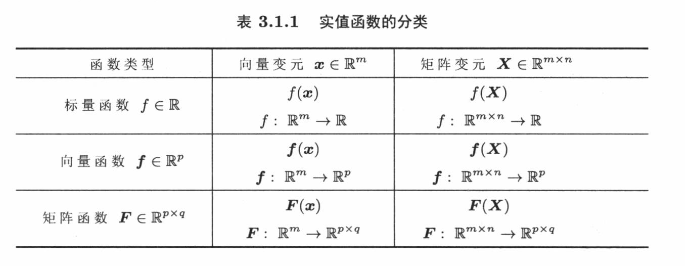

<!DOCTYPE html>


<html lang="zh-CN">


<head>
  <meta name="baidu-site-verification" content="codeva-NSg7ynviLa" />
  <meta charset="utf-8" />
    
  <meta name="viewport" content="width=device-width, initial-scale=1, maximum-scale=1" />
  <title>
    矩阵微分与正规方程组推导 |  
  </title>
  <meta name="generator" content="hexo-theme-ayer">
  
  <link rel="shortcut icon" href="/images/mojie.jpg" />
  
  
<link rel="stylesheet" href="/dist/main.css">

  <link rel="stylesheet" href="https://cdn.jsdelivr.net/gh/Shen-Yu/cdn/css/remixicon.min.css">
  
<link rel="stylesheet" href="/css/custom.css">

  
  <script src="https://cdn.jsdelivr.net/npm/pace-js@1.0.2/pace.min.js"></script>
  
  

  

<link rel="alternate" href="/atom.xml" title="null" type="application/atom+xml">
</head>

</html>

<body>
  <div id="app">
    
      
    <main class="content on">
      <section class="outer">
  <article
  id="post-矩阵微分与正规方程组推导"
  class="article article-type-post"
  itemscope
  itemprop="blogPost"
  data-scroll-reveal
>
  <div class="article-inner">
    
    <header class="article-header">
       
<h1 class="article-title sea-center" style="border-left:0" itemprop="name">
  矩阵微分与正规方程组推导
</h1>
 

    </header>
     
    <div class="article-meta">
      <a href="/posts/55264e6f/" class="article-date">
  <time datetime="2021-11-08T03:27:05.000Z" itemprop="datePublished">2021-11-08</time>
</a> 
  <div class="article-category">
    <a class="article-category-link" href="/categories/%E7%90%86%E8%AE%BA%E5%AD%A6%E4%B9%A0/">理论学习</a> / <a class="article-category-link" href="/categories/%E7%90%86%E8%AE%BA%E5%AD%A6%E4%B9%A0/%E7%BA%BF%E6%80%A7%E6%A8%A1%E5%9E%8B/">线性模型</a>
  </div>
  
<div class="word_count">
    <span class="post-time">
        <span class="post-meta-item-icon">
            <i class="ri-quill-pen-line"></i>
            <span class="post-meta-item-text"> 字数统计:</span>
            <span class="post-count">7.1k</span>
        </span>
    </span>

    <span class="post-time">
        &nbsp; | &nbsp;
        <span class="post-meta-item-icon">
            <i class="ri-book-open-line"></i>
            <span class="post-meta-item-text"> 阅读时长≈</span>
            <span class="post-count">35 分钟</span>
        </span>
    </span>
</div>
 
    </div>
      
    <div class="tocbot"></div>


  
    <div class="article-entry" itemprop="articleBody">
       
  <link rel="stylesheet" type="text/css" href="https://cdn.jsdelivr.net/hint.css/2.4.1/hint.min.css"><p>在看吴恩达老师CS229课程时，看吴老师推导线性回归的<strong>正规方程组</strong>（$X^{T} X \theta=X^{T} y$）时，感觉不是很系统，而且引入了一个新的概念，<strong>矩阵求导</strong>。这部分内容之前上育种课的时候就感觉云里雾里，这次花了些时间，把这一部分内容搞懂了。</p>
<span id="more"></span> 
<h1>问题描述</h1>
<p>线性回归可以用向量的形式描述为下式（向量表示为加粗的小写字母，默认为竖向量；矩阵表示为加粗的大写字母，下同）<br>
$$<br>
\boldsymbol{y=X\beta+e}<br>
$$<br>
根据最小二乘法，代价函数定义为 （假设样本数为 $m$，参数数目为 $n+1$, 使用向量外积转为向量乘法形式）:<br>
$$<br>
J(\boldsymbol{\beta})  =\frac{1}{2} \sum_{i=1}^{m}\left(h_{\beta}\left(x^{(i)}\right)-y^{(i)}\right)^{2} =<br>
\frac{1}{2}\boldsymbol{(X \beta-y)^{T}(X \beta-y)} \<br>
$$<br>
我们需要寻找使得代价函数（平方误差和或均方误差）最小的一组常数 $\boldsymbol{\beta}$ ，这是一个优化问题（求一个函数的极值：极大值或极小值）。</p>
<p>在高中就学过，一个函数的极值往往是其导数为0的位置，因此我们需要求使得代价函数的导数为0（梯度为 $\boldsymbol{0}$ 向量）的 $\boldsymbol{\beta}$ 值，而这就牵涉到了矩阵微分或矩阵求导。（实际上，一阶导数为0的点仅仅是一个驻点或称平稳点，一阶导数为0仅仅是全局极小点的<strong>必要不充分</strong>条件。但是最小二乘的代价函数是一个凸函数，因此一阶导为0的点就是全局极小点，这些概念具体可见张贤达老师的《矩阵分析与应用》<sup id="fnref:1"><a href="#fn:1" rel="footnote"><span class="hint--top hint--error hint--medium hint--rounded hint--bounce" aria-label="张贤达《矩阵分析与应用（第二版）》">[1]</span></a></sup>。）</p>
<p>所以，这里需要先了解矩阵微分的一些概念和知识，这一部分内容同样见于张贤达老师的书<sup id="fnref:1"><a href="#fn:1" rel="footnote"><span class="hint--top hint--error hint--medium hint--rounded hint--bounce" aria-label="张贤达《矩阵分析与应用（第二版）》">[1]</span></a></sup>，知乎上也有人进行了一些梳理<sup id="fnref:2"><a href="#fn:2" rel="footnote"><span class="hint--top hint--error hint--medium hint--rounded hint--bounce" aria-label="https://zhuanlan.zhihu.com/p/305171795">[2]</span></a></sup>。</p>
<h1>矩阵微分</h1>
<h2 id="梯度矩阵定义">梯度矩阵定义</h2>
<p>首先，我们将线性代数中的函数依据其输入输出划分为下面这些类型，输入可以为向量或矩阵，输出可以分为标量、向量和矩阵（函数定义就是一个映射关系，线性代数里的函数仅仅是将输入输出换成了向量和矩阵，比如矩阵乘法 $f(\boldsymbol{x}) = \boldsymbol{Ax}$ 就是一个映射/函数）。</p>
<p></p>
<p>这里只考虑<strong>输入为一个向量的标量函数</strong>（$R^m \rightarrow R$ ）。</p>
<p>矩阵微分有两种定义方式，一种称为 Jacobian 矩阵，一种称为梯度矩阵，二者的内容均为<strong>偏导数</strong>，仅仅是结果的布局不同，互为转置矩阵。这里只说梯度矩阵，更详细的内容见张贤达老师的书。</p>
<p>实值标量函数 $f(x)$ 的梯度向量 $\nabla_{\boldsymbol{x}} f(\boldsymbol{x})$ 为 $m \times 1$ 列向量, 定义为 (输入为一个向量，输出为一个标量)<br>
$$<br>
\nabla_{\boldsymbol{x}} f(\boldsymbol{x}) \stackrel{\text { def }}{=}\left[\frac{\partial f(\boldsymbol{x})}{\partial x_{1}}, \cdots, \frac{\partial f(\boldsymbol{x})}{\partial x_{m}}\right]^{\mathrm{T}}=\frac{\partial f(\boldsymbol{x})}{\partial \boldsymbol{x}}<br>
$$</p>
<h2 id="梯度矩阵性质">梯度矩阵性质</h2>
<h2 id="梯度矩阵计算">梯度矩阵计算</h2>
<p>那么我们如何计算一个梯度函数的梯度向量或梯度矩阵呢？你可以直接通过定义拆分成元素级别来计算，</p>
<p>例如求实值函数 $f(x)=\boldsymbol{x}^{\mathrm{T}} \boldsymbol{A} \boldsymbol{x}$ 的梯度矩阵。由于 $\boldsymbol{x}^{\mathrm{T}} \boldsymbol{A} \boldsymbol{x}=\sum_{k=1}^{n} \sum_{l=1}^{n} a_{k l} x_{k} x_{l}$, 故可求出梯度向量 $\frac{\partial \boldsymbol{x}^{\mathrm{T}} \boldsymbol{A} \boldsymbol{x}}{\partial \boldsymbol{x}}$ 的第 $i$ 个分量为：<br>
$$<br>
\left[\frac{\partial \boldsymbol{x}^{\mathrm{T}} \boldsymbol{A} \boldsymbol{x}}{\partial \boldsymbol{x}}\right]<em>{i}=\frac{\partial}{\partial x</em>{i}} \sum_{k=1}^{n} \sum_{l=1}^{n} a_{k l} x_{k} x_{l}=\sum_{k=1}^{n} x_{k} a_{k i}+\sum_{l=1}^{n} x_{l} a_{i l} = \boldsymbol{(A^{T}x})<em>{i} + \boldsymbol{(Ax})</em>{i}<br>
$$<br>
立即得梯度向量 $\nabla_{\boldsymbol{X}} f(\boldsymbol{x})=\left(\boldsymbol{A^T}+\boldsymbol{A}\right) \boldsymbol{x}_{\text {。 }}$</p>
<p>但是这样做很麻烦，而已有的函数可能不好拆解成元素级别的式子，也不符合线性代数一向简洁的特点。</p>
<p>我们可以通过一个<strong>矩阵微分</strong>的性质来求解梯度矩阵，下面就简单介绍一下<sup id="fnref:1"><a href="#fn:1" rel="footnote"><span class="hint--top hint--error hint--medium hint--rounded hint--bounce" aria-label="张贤达《矩阵分析与应用（第二版）》">[1]</span></a></sup>。在介绍矩阵微分之前，需要掌握一些<strong>矩阵的迹</strong>的性质</p>
<h3 id="矩阵的迹">矩阵的迹</h3>
<p><strong>定义</strong> $ n \times n$ 矩阵 $\boldsymbol{A}$ 的对角元素之和称为 $\boldsymbol{A}$ 的迹 (trace), 记作 $\operatorname{tr}(\boldsymbol{A})$, 即有<br>
$$<br>
\operatorname{tr}(\boldsymbol{A})=a_{11}+\cdots+a_{n n}=\sum_{i=1}^{n} a_{i i}<br>
$$<br>
<strong>非正方矩阵无迹的定义</strong>。</p>
<p>下面是矩阵的迹满足的一些性质。</p>
<p>(1) 若 $\boldsymbol{A}$ 和 $\boldsymbol{B}$ 均为 $n \times n$ 矩阵, 则 $\operatorname{tr}(\boldsymbol{A} \pm \boldsymbol{B})=\operatorname{tr}(\boldsymbol{A}) \pm \operatorname{tr}(\boldsymbol{B})$ 。<br>
(2) 若 $\boldsymbol{A}$ 和 $\boldsymbol{B}$ 均为 $n \times n$ 矩阵, 并且 $c_{1}$ 和 $c_{2}$ 为常数, 则 $\operatorname{tr}\left(c_{1} \boldsymbol{A} \pm c_{2} \boldsymbol{B}\right)=c_{1} \operatorname{tr}(\boldsymbol{A}) \pm$ $c_{2} \operatorname{tr}(\boldsymbol{B})$ 。特别地, 若 $\boldsymbol{B}=\boldsymbol{O}$, 则 $\operatorname{tr}(c \boldsymbol{A})=c \operatorname{tr}(\boldsymbol{A})$ 。<br>
(3) 矩阵 $\boldsymbol{A}$ 的转置、复数共轭和复共轭转置的迹分别为 $\operatorname{tr}\left(\boldsymbol{A}^{\mathrm{T}}\right)=\operatorname{tr}(\boldsymbol{A}), \operatorname{tr}\left(\boldsymbol{A}^{<em>}\right)=$ $[\operatorname{tr}(\boldsymbol{A})]^{</em>}$ 和 $\operatorname{tr}\left(\boldsymbol{A}^{\mathrm{H}}\right)=[\operatorname{tr}(\boldsymbol{A})]^{*}{ }^{\circ}$<br>
(4) 若 $\boldsymbol{A} \in \mathbb{C}^{m \times n}, \boldsymbol{B} \in \mathbb{C}^{n \times m}$, 则 $\operatorname{tr}(\boldsymbol{A B})=\operatorname{tr}(\boldsymbol{B} \boldsymbol{A})$ 。</p>
<p>证明，运用矩阵乘法，存在下式<br>
$$<br>
\begin{aligned}<br>
\operatorname{tr}(A B) &amp;=\sum_{i=1}^{M} A B_{i i} \<br>
&amp;=\sum_{i=1}^{m} \sum_{j=1}^{n} A_{i j} B_{j i}<br>
\end{aligned}<br>
$$</p>
<p>$$<br>
\begin{aligned}<br>
\operatorname{tr}(B A) &amp;=\sum_{i=1}^{n} B A_{j j} \<br>
&amp;=\sum_{j=1}^{n} \sum_{i=1}^{m} B_{ji} A_{i j}<br>
\end{aligned}<br>
$$</p>
<p>观察一下，得知二者相等，得证 $tr(AB) = tr(BA)$ 。</p>
<p>(5) 若 $\boldsymbol{A}$ 是一个 $m \times n$ 矩阵, 则 $\operatorname{tr}\left(\boldsymbol{A}^{\mathrm{H}} \boldsymbol{A}\right)=0 \Longleftrightarrow \boldsymbol{A}=\boldsymbol{O}_{m \times n}($ 零矩阵 $)$ 。</p>
<p>证明<br>
$$<br>
\begin{aligned}<br>
&amp; \operatorname{tr}\left(A^{T} A\right) \<br>
=&amp; \sum_{i=1}^{n} (A^{T} A)<em>{i i} \<br>
=&amp; \sum</em>{i=1}^{n}\sum_{j=1}^{m} A_{i j}^{T} A_{j i} \<br>
=&amp; \sum_{i=1}^{n} \sum_{j=1}^{m} A_{j i}^{2}<br>
\end{aligned}<br>
$$<br>
因此，$\operatorname{tr}\left(\boldsymbol{A}^{\mathrm{H}} \boldsymbol{A}\right)=0 \Longleftrightarrow \boldsymbol{A}=\boldsymbol{O}_{m \times n}$<br>
(6) $\boldsymbol{x}^{\mathrm{H}} \boldsymbol{A} \boldsymbol{x}=\operatorname{tr}\left(\boldsymbol{A} \boldsymbol{x} \boldsymbol{x}^{\mathrm{H}}\right)$ 和 $\boldsymbol{y}^{\mathrm{H}} \boldsymbol{x}=\operatorname{tr}\left(\boldsymbol{x} \boldsymbol{y}^{\mathrm{H}}\right)$。</p>
<p>证明：这里只证明前半部分，后半部分我直接脑补出来了。<br>
$$<br>
x_{n \times 1}=\left(x_{i}\right), \quad A_{n \times n}=\left[a_{i j}\right]\<br>
$$<br>
设<br>
$$<br>
B=x x^{T}=\left[\begin{array}{ccc}<br>
x_{1}^{2} &amp; x_{1} x_{2} &amp; \cdots &amp; x_{1} x_{n} \<br>
\vdots &amp; \cdots &amp; \cdots &amp; \vdots \<br>
x_{n} x_{1} &amp; x_{n} x_{2} &amp; \cdots &amp; x_{n} x_{n}<br>
\end{array}\right]<br>
$$</p>
<p>$$<br>
\begin{aligned}<br>
tr(Axx^{T})<br>
&amp;=\operatorname{tr}(A B)\<br>
&amp;=\sum_{i=1}^{n}(A B)<em>{i i}\<br>
&amp;=\sum</em>{i=1}^{n} \sum_{j=1}^{n} A_{i j} B_{j i}\<br>
&amp;=\sum_{i=1}^{n} \sum_{j=1}^{n} a_{i j} x_{j} x_{i}\<br>
&amp;=x^{T} A x<br>
\end{aligned}<br>
$$</p>
<p>(7) 迹等于特征值之和, 即 $\operatorname{tr}(\boldsymbol{A})=\lambda_{1}+\cdots+\lambda_{n}$ 。<br>
(8) 分块矩阵的迹满足<br>
$$<br>
\operatorname{tr}\left[\begin{array}{ll}<br>
\boldsymbol{A} &amp; \boldsymbol{B} \<br>
\boldsymbol{C} &amp; \boldsymbol{D}<br>
\end{array}\right]=\operatorname{tr}(\boldsymbol{A})+\operatorname{tr}(\boldsymbol{D})<br>
$$<br>
式中, $\boldsymbol{A} \in \mathbb{C}^{m \times m}, \boldsymbol{B} \in \mathbb{C}^{m \times n}, \boldsymbol{C} \in \mathbb{C}^{n \times m}, \boldsymbol{D} \in \mathbb{C}^{n \times n}$ 。<br>
(9) 对于任何正整数 $k$, 有<br>
$$<br>
\operatorname{tr}\left(\boldsymbol{A}^{k}\right)=\sum_{i=1}^{n} \lambda_{i}^{k}<br>
$$<br>
灵活运用迹的等式 $\operatorname{tr}(\boldsymbol{U} \boldsymbol{V})=\operatorname{tr}(\boldsymbol{V} \boldsymbol{U})$, 可以得到一些常用的重要结果。例如, 矩阵 $\boldsymbol{A}^{\mathrm{H}} \boldsymbol{A}$ 和 $\boldsymbol{A A}^{\mathrm{H}}$ 的迹相等, 且有<br>
$$<br>
\operatorname{tr}\left(\boldsymbol{A}^{\mathrm{H}} \boldsymbol{A}\right)=\operatorname{tr}\left(\boldsymbol{A} \boldsymbol{A}^{\mathrm{H}}\right)=\sum_{i=1}^{n} \sum_{j=1}^{n} a_{i j} a_{i j}^{*}=\sum_{i=1}^{n} \sum_{j=1}^{n}\left|a_{i j}\right|^{2}<br>
$$<br>
又如, 在迹的等式 $\operatorname{tr}(\boldsymbol{U} \boldsymbol{V})=\operatorname{tr}(\boldsymbol{V} \boldsymbol{U})$ 中, 若分别令 $\boldsymbol{U}=\boldsymbol{A}, \boldsymbol{V}=\boldsymbol{B} \boldsymbol{C}$ 和 $U=A \boldsymbol{B}$, $\boldsymbol{V}=\boldsymbol{C}$, 则有<br>
$$<br>
\operatorname{tr}(\boldsymbol{A B C})=\operatorname{tr}(\boldsymbol{B C A})=\operatorname{tr}(\boldsymbol{C A B})<br>
$$<br>
类似地, 若分别令 $U=A, V=B C D ; U=A B, V=C D$ 及 $U=A B C, V=D$, 又有<br>
$$<br>
\operatorname{tr}(\boldsymbol{A B C D})=\operatorname{tr}(\boldsymbol{B C D A})=\operatorname{tr}(\boldsymbol{C D A B})=\operatorname{tr}(\boldsymbol{D} \boldsymbol{A B C})<br>
$$<br>
利用上式还易知, 若矩阵 $\boldsymbol{A}$ 与 $\boldsymbol{B}$ 均为 $m \times m$ 矩阵, 且 $B$ 非奇异, 则<br>
$$<br>
\operatorname{tr}\left(\boldsymbol{B} \boldsymbol{A B}^{-1}\right)=\operatorname{tr}\left(\boldsymbol{B}^{-1} \boldsymbol{A} \boldsymbol{B}\right)=\operatorname{tr}\left(\boldsymbol{A B B}^{-1}\right)=\operatorname{tr}(\boldsymbol{A})<br>
$$</p>
<h3 id="一阶矩阵微分">一阶矩阵微分</h3>
<h3 id="一阶实矩阵微分">一阶实矩阵微分</h3>
<p>矩阵微分用符号 $\mathrm{d} \boldsymbol{X}$ 表示, 定义为 $\mathrm{d} \boldsymbol{X}=\left[\mathrm{d} X_{i j}\right]<em>{i=1, j=1}^{m, n}$ 。<br>
例 考虑标量函数 $\operatorname{tr}(\boldsymbol{U})$ 的微分, 得<br>
$$<br>
\mathrm{d}(\operatorname{tr} \boldsymbol{U})=\mathrm{d}\left(\sum</em>{i=1}^{n} u_{i i}\right)=\sum_{i=1}^{n} \mathrm{~d} u_{i i}=\operatorname{tr}(\mathrm{d} \boldsymbol{U})<br>
$$<br>
即有 $\mathrm{d}(\operatorname{tr} \boldsymbol{U})=\operatorname{tr}(\mathrm{d} \boldsymbol{U})$ 。<br>
例 考虑矩阵乘积 $U V$ 的微分矩阵, 有<br>
$$<br>
\begin{aligned}<br>
[\mathrm{d}(\boldsymbol{U} \boldsymbol{V})]<em>{i j} &amp;=\mathrm{d}\left([\boldsymbol{U} \boldsymbol{V}]</em>{i j}\right)=\mathrm{d}\left(\sum_{k} u_{i k} v_{k j}\right)=\sum_{k} \mathrm{~d}\left(u_{i k} v_{k j}\right) \<br>
&amp;=\sum_{k}\left[\left(\mathrm{~d} u_{i k}\right) v_{k j}+u_{i k} \mathrm{~d} v_{k j}\right]=\sum_{k}\left(\mathrm{~d} u_{i k}\right) v_{k j}+\sum_{k} u_{i k} \mathrm{~d} v_{k j} \<br>
&amp;=[(\mathrm{d} \boldsymbol{U}) \boldsymbol{V}]<em>{i j}+[\boldsymbol{U} \mathrm{d} \boldsymbol{V}]</em>{i j}<br>
\end{aligned}<br>
$$<br>
从而得 $\mathrm{d}(\boldsymbol{U} \boldsymbol{V})=(\mathrm{d} \boldsymbol{U}) \boldsymbol{V}+\boldsymbol{U} \mathrm{d} \boldsymbol{V}$ 。<br>
以上举例表明, 实矩阵微分具有以下两个基本性质:<br>
<strong>转置</strong> 矩阵转置的微分等于矩阵微分的转置, 即有 $\mathrm{d}\left(\boldsymbol{X}^{\mathrm{T}}\right)=(\mathrm{d} \boldsymbol{X})^{\mathrm{T}}$ 。<br>
<strong>线性</strong> $\mathrm{d}(\alpha \boldsymbol{X}+\beta \boldsymbol{Y})=\alpha \mathrm{d} \boldsymbol{X}+\beta \mathrm{d} \boldsymbol{Y}$ 。<br>
下面汇总了矩阵微分的常用计算公式  。<br>
(1) 常数矩阵的微分矩阵为零矩阵, 即 $\mathrm{d} \boldsymbol{A}=\boldsymbol{O}$ 。<br>
(2) 常数 $\alpha$ 与矩阵 $\boldsymbol{X}$ 的乘积的微分矩阵 $\mathrm{d}(\alpha \boldsymbol{X})=\alpha \mathrm{d} \boldsymbol{X}$ 。<br>
(3) 矩阵转置的微分矩阵等于原矩阵的微分矩阵的转置, 即 $\mathrm{d}\left(\boldsymbol{X}^{\mathrm{T}}\right)=(\mathrm{d} \boldsymbol{X})^{\mathrm{T}}$ 。<br>
(4) 两个矩阵函数的和 (差) 的微分矩阵为 $\mathrm{d}(\boldsymbol{U} \pm \boldsymbol{V})=\mathrm{d} \boldsymbol{U} \pm \mathrm{d} \boldsymbol{V}$ 。<br>
(5) 常数矩阵与矩阵乘积的微分矩阵为 $\mathrm{d}(\boldsymbol{A X} \boldsymbol{B})=\boldsymbol{A}(\mathrm{d} \boldsymbol{X}) \boldsymbol{B}$ 。<br>
(6) 矩阵函数 $\boldsymbol{U}=\boldsymbol{F}(\boldsymbol{X}), \boldsymbol{V}=\boldsymbol{G}(\boldsymbol{X}), \boldsymbol{W}=\boldsymbol{H}(\boldsymbol{X})$ 乘积的微分矩阵为<br>
$$<br>
\begin{aligned}<br>
\mathrm{d}(\boldsymbol{U} \boldsymbol{V}) &amp;=(\mathrm{d} \boldsymbol{U}) \boldsymbol{V}+\boldsymbol{U}(\mathrm{d} \boldsymbol{V}) \<br>
\mathrm{d}(\boldsymbol{U} \boldsymbol{V} \boldsymbol{W}) &amp;=(\mathrm{d} \boldsymbol{U}) \boldsymbol{V} \boldsymbol{W}+\boldsymbol{U}(\mathrm{d} \boldsymbol{V}) \boldsymbol{W}+\boldsymbol{U} \boldsymbol{V}(\mathrm{d} \boldsymbol{W})<br>
\end{aligned}<br>
$$<br>
(7) 矩阵 $\boldsymbol{X}$ 的迹的矩阵微分 $\mathrm{d}(\operatorname{tr}(\boldsymbol{X}))$ 等于矩阵微分 $\mathrm{d} \boldsymbol{X}$ 的迹 $\operatorname{tr}(\mathrm{d} \boldsymbol{X})$, 即<br>
$$<br>
\mathrm{d}(\operatorname{tr}(\boldsymbol{X}))=\operatorname{tr}(\mathrm{d} \boldsymbol{X})<br>
$$<br>
特别地, 矩阵函数 $\boldsymbol{F}(\boldsymbol{X})$ 的迹的矩阵微分为 $\mathrm{d}(\operatorname{tr}(\boldsymbol{F}(\boldsymbol{X})))=\operatorname{tr}(\mathrm{d}(\boldsymbol{F}(\boldsymbol{X})))$ 。</p>
<h3 id="标量函数的梯度矩阵辨识">标量函数的梯度矩阵辨识</h3>
<p>在多变量函数的微积分中, 称多变量函数 $f\left(x_{1}, \cdots, x_{m}\right)$ 在点 $\left(x_{1}, \cdots, x_{m}\right)$ 可微分, 若 $f\left(x_{1}, \cdots, x_{m}\right)$ 的全改变量可以写作<br>
$$<br>
\begin{aligned}<br>
\Delta f\left(x_{1}, \cdots, x_{m}\right) &amp;=f\left(x_{1}+\Delta x_{1}, \cdots, x_{m}+\Delta x_{m}\right)-f\left(x_{1}, \cdots, x_{m}\right) \<br>
&amp;=A_{1} \Delta x_{1}+\cdots+A_{m} \Delta x_{m}+O\left(\Delta x_{1}, \cdots, \Delta x_{m}\right)<br>
\end{aligned}<br>
$$<br>
式中, $A_{1}, \cdots, A_{m}$ 分别与 $\Delta x_{1}, \cdots, \Delta x_{m}$ 无关, 而 $O\left(\Delta x_{1}, \cdots, \Delta x_{m}\right)$ 表示偏改变量 $\Delta x_{1}$, $\cdots, \Delta x_{m}$ 的二阶及高阶项。这时，函数 $f\left(x_{1}, \cdots, x_{m}\right)$ 的偏导数 $\frac{\partial f}{\partial x_{1}}, \cdots, \frac{\partial f}{\partial x_{m}}$ 一定存在,</p>
<p>并且<br>
$$<br>
\frac{\partial f}{\partial x_{1}}=A_{1}, \quad \cdots \quad, \quad \frac{\partial f}{\partial x_{m}}=A_{m}<br>
$$<br>
全改变量 $\Delta f\left(x_{1}, \cdots, x_{m}\right)$ 的线性主部<br>
$$<br>
A_{1} \Delta x_{1}+\cdots+A_{m} \Delta x_{m}=\frac{\partial f}{\partial x_{1}} \mathrm{~d} x_{1}+\cdots+\frac{\partial f}{\partial x_{m}} \mathrm{~d} x_{m}<br>
$$<br>
称为多变量函数 $f\left(x_{1}, \cdots, x_{m}\right)$ 的全微分, 记为<br>
$$<br>
\mathrm{d} f\left(x_{1}, \cdots, x_{m}\right)=\frac{\partial f}{\partial x_{1}} \mathrm{~d} x_{1}+\cdots+\frac{\partial f}{\partial x_{m}} \mathrm{~d} x_{m}<br>
$$<br>
<strong>多变量函数 $f\left(x_{1}, \cdots, x_{m}\right)$ 在点 $\left(x_{1}, \cdots, x_{m}\right)$ 可微分的充分条件是: 偏导数 $\frac{\partial f}{\partial x_{1}}, \cdots$, $\frac{\partial f}{\partial x_{m}}$ 均存在, 并且连续。</strong><br>
一阶实矩阵微分为、 矩阵的辨识提供了一种有效的方法。</p>
<h4 id="标量函数-f-boldsymbol-x-的梯度矩阵辩识">标量函数 $f(\boldsymbol{x})$ 的梯度矩阵辩识</h4>
<p>考虑标量函数 $f(x)$, 其变元向量 $\boldsymbol{x}=\left[x_{1}, \cdots, x_{m}\right]^{\mathrm{T}} \in \mathbb{R}^{m}$ 。将变元向量的元素 $x_{1}, \cdots, x_{m}$ 视为 $m$ 个变量, 利用式 (3.2.14), 可以直接引出以向量为变元的标量函数 $f(\boldsymbol{x})$ 的全微分表达式<br>
$$<br>
\begin{aligned}<br>
\mathrm{d} f(\boldsymbol{x}) &amp;=\frac{\partial f(\boldsymbol{x})}{\partial x_{1}} \mathrm{~d} x_{1}+\cdots+\frac{\partial f(\boldsymbol{x})}{\partial x_{m}} \mathrm{~d} x_{m} \<br>
&amp;=\left[\frac{\partial f(\boldsymbol{x})}{\partial x_{1}}, \cdots, \frac{\partial f(\boldsymbol{x})}{\partial x_{m}}\right]\left[\begin{array}{c}<br>
\mathrm{d} x_{1} \<br>
\vdots \<br>
\mathrm{d} x_{m}<br>
\end{array}\right]<br>
\end{aligned}<br>
$$</p>
<p>或简记为<br>
$$<br>
\mathrm{d} f(\boldsymbol{x})=\frac{\partial f(\boldsymbol{x})}{\partial \boldsymbol{x}^{\mathrm{T}}} \mathrm{d} \boldsymbol{x}=(\mathrm{d} \boldsymbol{x})^{\mathrm{T}} \frac{\partial f(\boldsymbol{x})}{\partial \boldsymbol{x}}<br>
$$<br>
式中<br>
$$<br>
\begin{gathered}<br>
\frac{\partial f(\boldsymbol{x})}{\partial \boldsymbol{x}^{\mathrm{T}}}=\left[\frac{\partial f(\boldsymbol{x})}{\partial x_{1}}, \cdots, \frac{\partial f(\boldsymbol{x})}{\partial x_{m}}\right] \<br>
\mathrm{d} \boldsymbol{x}=\left[\mathrm{d} x_{1}, \cdots, \mathrm{d} x_{m}\right]^{\mathrm{T}}<br>
\end{gathered}<br>
$$<br>
式 (3.2.16) 称为微分法则的向量形式, 它启示了一个重要的应用: 若令 $\boldsymbol{A}=\frac{\partial f(\boldsymbol{x})}{\partial \boldsymbol{x^T}}$, 则一阶微分可以写作迹函数形式 (第二个等号应用标量的迹等于本身)<br>
$$<br>
\mathrm{d} f(\boldsymbol{x})=\frac{\partial f(\boldsymbol{x})}{\partial \boldsymbol{x}^{\mathrm{T}}} \mathrm{d} \boldsymbol{x}=\operatorname{tr}(\boldsymbol{A} \mathrm{d} \boldsymbol{x})<br>
$$<br>
这表明, 标量函数 $f(x)$ 的梯度矩阵与微分矩阵之间存在等价关系<br>
$$<br>
\mathrm{d} f(\boldsymbol{x})=\operatorname{tr}(\boldsymbol{A} \mathrm{d} \boldsymbol{x}) \Longleftrightarrow \nabla_{\boldsymbol{x}} f(\boldsymbol{x})=\frac{\partial f(\boldsymbol{x})}{\partial \boldsymbol{x}}=\boldsymbol{A^T}<br>
$$<br>
换言之, 若函数 $f(\boldsymbol{x})$ 的微分可以写作 $\mathrm{d} f(\boldsymbol{x})=\operatorname{tr}(\boldsymbol{A} \mathrm{d} \boldsymbol{x})$, 则矩阵 $\boldsymbol{A}$ 就是函数 $f(\boldsymbol{x})$ 关于 其变元向量 $\boldsymbol{x}$ 的 梯度矩阵的转置。</p>
<p>因此，我们得到了一个计算梯度矩阵的有效方法:</p>
<p>(1) 求实值函数 $f(\boldsymbol{X})$ 相对于变元矩阵 $\boldsymbol{X}$ 的矩阵微分 $\mathrm{d} f(\boldsymbol{X})$, 并将其表示成规范形式 $\mathrm{d} f(\boldsymbol{X})=\operatorname{tr}(\boldsymbol{A} \mathrm{d} \boldsymbol{X})$;<br>
(2) 实值函数 $f(\boldsymbol{X})$ 相对于 $m \times n$ 变元矩阵 $\boldsymbol{X}$ 的梯度矩阵等于 $\boldsymbol{A^T}$ 。</p>
<p>此时，考察二次型函数 $f(x)=x^{\mathrm{T}} \boldsymbol{A} \boldsymbol{x}$, 其中, $\boldsymbol{A}$ 是一个正方的常数矩阵。首先将标量函数写成迹函数形式, 然后利用矩阵乘积的微分易得<br>
$$<br>
\begin{aligned}<br>
\mathrm{d} f(\boldsymbol{x}) &amp;=\mathrm{d}\left(\operatorname{tr}\left(\boldsymbol{x}^{\mathrm{T}} \boldsymbol{A} \boldsymbol{x}\right)\right)=\operatorname{tr}\left[(\mathrm{d} \boldsymbol{x})^{\mathrm{T}} \boldsymbol{A} \boldsymbol{x}+\boldsymbol{x}^{\mathrm{T}} \boldsymbol{A} \mathrm{d} \boldsymbol{x}\right] \<br>
&amp;=\operatorname{tr}\left(\mathrm{d} \boldsymbol{x}^{\mathrm{T}} \boldsymbol{A} \boldsymbol{x}\right)+\operatorname{tr}\left(\boldsymbol{x}^{\mathrm{T}} \boldsymbol{A} \mathrm{d} \boldsymbol{x}\right)\<br>
&amp;=\operatorname{tr}\left([\mathrm{d} \boldsymbol{x}^{\mathrm{T}} \boldsymbol{A} \boldsymbol{x}]^{\mathrm{T}}\right)+\operatorname{tr}\left(\boldsymbol{x}^{\mathrm{T}} \boldsymbol{A} \mathrm{d} \boldsymbol{x}\right)\<br>
&amp;=\operatorname{tr}\left(\boldsymbol{x}^{\mathrm{T}} \boldsymbol{A}^{\mathrm{T}} \mathrm{d} \boldsymbol{x}\right)+\operatorname{tr}\left(\boldsymbol{x}^{\mathrm{T}} \boldsymbol{A} \mathrm{d} \boldsymbol{x}\right) \<br>
&amp;=\operatorname{tr}\left(\boldsymbol{x}^{\mathrm{T}}\left(\boldsymbol{A}+\boldsymbol{A}^{\mathrm{T}}\right) \mathrm{d} \boldsymbol{x}\right)<br>
\end{aligned}<br>
$$</p>
<p>直接得二次型函数 $f(\boldsymbol{x})=\boldsymbol{x}^{\mathrm{T}} \boldsymbol{A} \boldsymbol{x}$ 关于变元向量 $\boldsymbol{x}$ 的梯度向量为<br>
$$<br>
\nabla_{\boldsymbol{x}}\left(\boldsymbol{x}^{\mathrm{T}} \boldsymbol{A} \boldsymbol{x}\right)=\frac{\partial \boldsymbol{x}^{\mathrm{T}} \boldsymbol{A} \boldsymbol{x}}{\partial \boldsymbol{x}}=\left[\boldsymbol{x}^{\mathrm{T}}\left(\boldsymbol{A}+\boldsymbol{A}^{\mathrm{T}}\right)\right]^{\mathrm{T}}=\left(\boldsymbol{A}^{\mathrm{T}}+\boldsymbol{A}\right) \boldsymbol{x}<br>
$$<br>
显然, 若 $\boldsymbol{A}$ 为对称矩阵, 则 $\nabla_{\boldsymbol{x}}\left(\boldsymbol{x}^{\mathrm{T}} \boldsymbol{A} \boldsymbol{x}\right)=\frac{\partial \boldsymbol{x}^{\mathrm{T}} \boldsymbol{A} \boldsymbol{x}}{\partial \boldsymbol{x}}=2 \boldsymbol{A} \boldsymbol{x}$ 。</p>
<h4 id="矩阵的标量函数：迹">矩阵的标量函数：迹</h4>
<p>根据<strong>迹</strong>的性质，我们可以得到：</p>
<p>(1) 标量函数 $f(\boldsymbol{X})$ 总可以写成迹函数的形式, 因为 $f(\boldsymbol{X})=\operatorname{tr}(f(\boldsymbol{X}))$;<br>
(2) 无论 $\mathrm{d} \boldsymbol{X}$ 出现在迹函数内的任何位置, 总可以通过迹函数的性质 $\operatorname{tr}[\boldsymbol{A}(\mathrm{d} \boldsymbol{X}) \boldsymbol{B}]=$ $\operatorname{tr}(\boldsymbol{B} \boldsymbol{A} \mathrm{d} \boldsymbol{X})$, 将 $\mathrm{d} \boldsymbol{X}$ 写到迹函数变量的最右端, 从而得到迹函数微分矩阵的规范形式。<br>
(3) 对于 $(\mathrm{d} \boldsymbol{X})^{\mathrm{T}}$, 总可以通过迹函数的性质 $\operatorname{tr}\left[\boldsymbol{A}(\mathrm{d} \boldsymbol{X})^{\mathrm{T}} \boldsymbol{B}\right]=\boldsymbol{\operatorname{tr}(B^{T}dXA^T)}=\operatorname{tr}\left(\boldsymbol{A}^{\mathrm{T}} \boldsymbol{B}^{\mathrm{T}} \mathrm{d} \boldsymbol{X}\right)$ , 写成迹函数微分矩阵的规范形式。</p>
<h1>推导正规方程组</h1>
<p>回到我们的问题，这里我们将最小二乘法的损失函数展开，得到<br>
$$<br>
J(\boldsymbol{\beta})=\boldsymbol{(X \beta-y)^{\mathrm{T}}(X \beta-y)}=\boldsymbol{(\beta^{\mathrm{T}} X^{\mathrm{T}} -y^{\mathrm{T}})(X \beta-y)}=\boldsymbol{\beta}^{\mathrm{T}} \boldsymbol{X}^{\mathrm{T}} \boldsymbol{X} \boldsymbol{\beta}-\boldsymbol{\beta}^{\mathrm{T}} \boldsymbol{X}^{\mathrm{T}} \boldsymbol{y}-\boldsymbol{y}^{\mathrm{T}} \boldsymbol{X} \boldsymbol{\beta}+\boldsymbol{y}^{\mathrm{T}} \boldsymbol{y}<br>
$$<br>
注意到，$\boldsymbol{\beta}^{\mathrm{T}} \boldsymbol{X}^{\mathrm{T}} \boldsymbol{y} \text{ 与 } \boldsymbol{y}^{\mathrm{T}} \boldsymbol{X} \boldsymbol{\beta}$ 二者互为转置，并且二者均为标量，因此二者相等。损失函数写为<br>
$$<br>
J(\boldsymbol{\beta})=\boldsymbol{(X \beta-y)^{\mathrm{T}}(X \beta-y)}=\boldsymbol{\beta}^{\mathrm{T}} \boldsymbol{X}^{\mathrm{T}} \boldsymbol{X} \boldsymbol{\beta}-2\boldsymbol{y}^{\mathrm{T}} \boldsymbol{X} \boldsymbol{\beta}+\boldsymbol{y}^{\mathrm{T}} \boldsymbol{y}<br>
$$</p>
<p>求 $J(\boldsymbol{\beta})$ 相对于 $\boldsymbol{\beta}$ 的导数, 并令其结果等于零</p>
<p>求梯度向量的过程需要用到上面提到的矩阵微分的性质。<br>
$$<br>
\mathrm{d} f(\boldsymbol{\beta})=\operatorname{tr}(\boldsymbol{X} \mathrm{d} \boldsymbol{\beta}) \Longleftrightarrow \nabla_{\boldsymbol{\beta}} f(\boldsymbol{\beta})=\boldsymbol{X}^{\mathrm{T}}<br>
$$</p>
<p>证明过程如下（这里我们先求解两个子式的微分，注意到这两个子式也是标量，最后一个子式 $\boldsymbol{y^T y}$ 不是关于 $\boldsymbol{\beta}$ 的式子，因此其微分矩阵为 $\boldsymbol{0}$ 矩阵）<br>
$$<br>
\begin{aligned}<br>
&amp;d\left(\boldsymbol{\beta^{T} X^{T} X \beta}\right)\<br>
&amp;=d\left(\operatorname{tr}\left(\boldsymbol{\beta^{T} X^{T} X \beta}\right)\right)\<br>
&amp;=\operatorname{tr}\left(d\left(\boldsymbol{\beta^{T} X^{T} X \beta}\right)\right)\<br>
&amp;=\operatorname{tr}\left(d\boldsymbol{\left(\beta^{T}\right) X^{T} X \beta}+\boldsymbol{\beta^{T} X^{T} X d(\beta)}\right)\<br>
&amp;=\operatorname{tr}\left(\boldsymbol{d\left(\beta^{T}\right) X^{T} X \beta}\right)+\operatorname{tr}\left(\boldsymbol{\beta^{T} X^{T} X d(\beta)}\right)\<br>
&amp;=\operatorname{tr}\left(\boldsymbol{\beta^{T} X^{T} X d(\beta)}\right)+\operatorname{tr}\left(\boldsymbol{\beta^{T} X^{T} X d(\beta)}\right)\<br>
&amp;=\operatorname{tr}\left(2\boldsymbol{ \beta^{T} X^{T} X d(\beta)}\right)<br>
\end{aligned}<br>
$$</p>
<p>$$<br>
\begin{aligned}<br>
&amp; d\left(\boldsymbol{y^{T} X \beta}\right) \<br>
=&amp; d\left(t r\left(\boldsymbol{y^{T} X \beta}\right)\right) \<br>
=&amp; \operatorname{tr}\left(d\left(\boldsymbol{y^{T} X \beta}\right)\right) \<br>
=&amp; \operatorname{tr}\left(\boldsymbol{y^{T} X d(\beta)}\right)<br>
\end{aligned}<br>
$$</p>
<p>$$<br>
\begin{aligned}<br>
\boldsymbol{d \beta} &amp;=d\left(\boldsymbol{\beta^{T} X^{T} X \beta-2 y^{T} X \beta+y^{T} y}\right) \<br>
&amp;=d\left(\boldsymbol{\beta^{T} X^{T} X \beta}\right)-2 d \left(\boldsymbol{y^{T} X \beta}\right) \<br>
&amp;=\operatorname{tr}\left(2 \boldsymbol{\beta^{T} X^{T} X d(\beta)}\right)-2 tr\left(\boldsymbol{y^{T} X d(\beta)}\right) \<br>
&amp;=\operatorname{tr}\left(\left(\boldsymbol{2 \beta^{T} X^{T} X-2 y^{T} X}\right) d(\boldsymbol{\beta})\right)<br>
\end{aligned}<br>
$$</p>
<p>$$<br>
\begin{aligned}<br>
\boldsymbol{\nabla_{\beta} \beta} &amp;=\boldsymbol{\left(2 \beta^{T} X^{T} X-2 y^{T} X\right)^{T}} \<br>
&amp;=2\boldsymbol{\left(X^{T} X \beta-X^{T} y\right)}<br>
\end{aligned}<br>
$$</p>
<p>也就是说, 解 $\boldsymbol{\beta}$ 必然满足<br>
$$<br>
\boldsymbol{X}^{\mathrm{T}} \boldsymbol{X} \boldsymbol{\beta}=\boldsymbol{X}^{\mathrm{T}} \boldsymbol{y}<br>
$$<br>
这就是线性回归的<strong>正规方程组</strong>。</p>
<p>如果 $\boldsymbol{X^{\mathrm{T}} X}$ 非奇异,  该方程有唯一的解<br>
$$<br>
\boldsymbol{\beta}_{\mathrm{LS}}=\left(\boldsymbol{X}^{\mathrm{T}} \boldsymbol{X}\right)^{-1} \boldsymbol{X}^{\mathrm{T}} \boldsymbol{y}<br>
$$</p>
<h1>最小二乘估计值的性质</h1>
<p>这一部分内容来自于《linear models in statistics》<sup id="fnref:3"><a href="#fn:3" rel="footnote"><span class="hint--top hint--error hint--medium hint--rounded hint--bounce" aria-label="《linear models in statistics》
">[3]</span></a></sup></p>
<p>如果 $E(\mathbf{y})=\mathbf{X} \boldsymbol{\beta}$ ，那么最小二乘估计值 $\hat{\boldsymbol{\beta}}$ 是 $\boldsymbol{\beta}$ 的无偏估计值。</p>
<p>证明：<br>
$$<br>
\begin{aligned}<br>
E(\hat{\boldsymbol{\beta}}) &amp;=E\left[\left(\mathbf{X}^{\prime} \mathbf{X}\right)^{-1} \mathbf{X}^{\prime} \mathbf{y}\right] \<br>
&amp;=\left(\mathbf{X}^{\prime} \mathbf{X}\right)^{-1} \mathbf{X}^{\prime} E(\mathbf{y}) \<br>
&amp;=\left(\mathbf{X}^{\prime} \mathbf{X}\right)^{-1} \mathbf{X}^{\prime} \mathbf{X} \boldsymbol{\beta} \<br>
&amp;=\boldsymbol{\beta} .<br>
\end{aligned}<br>
$$<br>
如果 $\operatorname{cov}(\mathbf{y})=\sigma^{2} \mathbf{I}$ ，那么最小二乘估计值 $\hat{\boldsymbol{\beta}}$ 的协方差矩阵为 $\sigma^{2}\left(\mathbf{X}^{\prime} \mathbf{X}\right)^{-1}$ 。</p>
<p>证明：<br>
$$<br>
\begin{aligned}<br>
\operatorname{cov}(\hat{\boldsymbol{\beta}}) &amp;=\operatorname{cov}\left[\left(\mathbf{X}^{\prime} \mathbf{X}\right)^{-1} \mathbf{X}^{\prime} \mathbf{y}\right] \<br>
&amp;=\left(\mathbf{X}^{\prime} \mathbf{X}\right)^{-1} \mathbf{X}^{\prime} \operatorname{cov}(\mathbf{y})\left[\left(\mathbf{X}^{\prime} \mathbf{X}\right)^{-1} \mathbf{X}^{\prime}\right]^{\prime} \<br>
&amp;=\left(\mathbf{X}^{\prime} \mathbf{X}\right)^{-1} \mathbf{X}^{\prime}\left(\sigma^{2} \mathbf{I}\right) \mathbf{X}\left(\mathbf{X}^{\prime} \mathbf{X}\right)^{-1} \<br>
&amp;=\sigma^{2}\left(\mathbf{X}^{\prime} \mathbf{X}\right)^{-1} \mathbf{X}^{\prime} \mathbf{X}\left(\mathbf{X}^{\prime} \mathbf{X}\right)^{-1} \<br>
&amp;=\sigma^{2}\left(\mathbf{X}^{\prime} \mathbf{X}\right)^{-1}<br>
\end{aligned}<br>
$$<br>
<strong>定理</strong>：<strong>(Gauss – Markov Theorem)</strong>，如果同时满足  $E(\mathbf{y})=\mathbf{X} \boldsymbol{\beta}$  ， $\operatorname{cov}(\mathbf{y})=\sigma^{2} \mathbf{I}$ ，那么最小二乘估计值 $\hat{\boldsymbol{\beta}_{j}}$  , $j=0,1, \ldots, k$ 在所有的线性无偏估计值中具有<strong>最小的方差</strong>。</p>
<p>证明：</p>
<p>注意这里的“线性”指的是 $\hat{\boldsymbol{\beta}_{j}}$ 是关于  $\mathbf{y}$ 的线性变换。假设我们有一个 $\boldsymbol{\beta}$ 的无偏线性估计值为 $\boldsymbol{Ay}$  ，我们想要找到一个矩阵  $\boldsymbol{A}$ 使得  $\boldsymbol{Ay}$  的方差最小。</p>
<p>因为  $\boldsymbol{Ay}$ 无偏，我们有 $E(\mathbf{A y})=\boldsymbol{\beta}$ 。根据假设 $E(\mathbf{y})=\mathbf{X} \boldsymbol{\beta}$ ，我们可以将其写为<br>
$$<br>
E(\mathbf{A y})=\mathbf{A} E(\mathbf{y})=\mathbf{A} \mathbf{X} \boldsymbol{\beta}=\boldsymbol{\beta}<br>
$$<br>
该式需要对所有可能的  $\boldsymbol{\beta}$ 均成立（这句话我理解了半天， $\boldsymbol{\beta}$ 是由未知参数组成的向量，既然是未知的参数，那就是说每个参数可能是任意实数，因此 $\boldsymbol{\beta}$  可以是欧几里得空间中任意一个点），那么存在<br>
$$<br>
\mathbf{A} \mathbf{X}=\mathbf{I}<br>
$$</p>
<p>$\boldsymbol{Ay}$ 的协方差矩阵为<br>
$$<br>
\operatorname{cov}(\mathbf{A y})=\mathbf{A}\left(\sigma^{2} \mathbf{I}\right) \mathbf{A}^{\prime}=\sigma^{2} \mathbf{A} \mathbf{A}^{\prime}<br>
$$<br>
$\hat{\boldsymbol{\beta}}_{j}$ 的方差为协方差矩阵的对角线元素，因此我们需要挑一个矩阵 $\mathbf{A}$, 使得 $ \mathbf{A} \mathbf{A}^{\prime}$ 矩阵的对角线元素最小。为了让其与最小二乘估计值有关系，我们将其写作<br>
$$<br>
\begin{aligned}<br>
\mathbf{A} \mathbf{A}^{\prime} &amp;= \left[\mathbf{A}-\left(\mathbf{X}^{\prime} \mathbf{X}\right)^{-1} \mathbf{X}^{\prime}+\left(\mathbf{X}^{\prime} \mathbf{X}\right)^{-1} \mathbf{X}^{\prime}\right]\left[\mathbf{A}-\left(\mathbf{X}^{\prime} \mathbf{X}\right)^{-1} \mathbf{X}^{\prime}+\left(\mathbf{X}^{\prime} \mathbf{X}\right)^{-1} \mathbf{X}^{\prime}\right]^{\prime} \<br>
&amp;= \left[(\mathbf{A}-\left(\mathbf{X}^{\prime} \mathbf{X}\right)^{-1} \mathbf{X}^{\prime} )+\left(\mathbf{X}^{\prime} \mathbf{X}\right)^{-1} \mathbf{X}^{\prime}\right]\left[(\mathbf{A}^{\prime}- \mathbf{X} \left(\mathbf{X}^{\prime} \mathbf{X}\right)^{-1}) +  \mathbf{X} \left(\mathbf{X}^{\prime} \mathbf{X}\right)^{-1}\right] \<br>
&amp;=\left[\mathbf{A}-\left(\mathbf{X}^{\prime} \mathbf{X}\right)^{-1} \mathbf{X}^{\prime}\right]\left[\mathbf{A}-\left(\mathbf{X}^{\prime} \mathbf{X}\right)^{-1} \mathbf{X}^{\prime}\right]^{\prime} + \left(\mathbf{X}^{\prime} \mathbf{X}\right)^{-1} &amp;  \because \mathbf{A} \mathbf{X}=\mathbf{I} \<br>
\end{aligned}<br>
$$</p>
<p>因为 $\left[\mathbf{A}-\left(\mathbf{X}^{\prime} \mathbf{X}\right)^{-1} \mathbf{X}^{\prime}\right]\left[\mathbf{A}-\left(\mathbf{X}^{\prime} \mathbf{X}\right)^{-1} \mathbf{X}^{\prime}\right]^{\prime}$ 是一个半正定矩阵（$\mathbf{AA’}$ 是一个半正定矩阵 ），根据半正定矩阵的性质，其对角线元素大于等于 0 。因此，只有当我们设 $\mathbf{A}=\left(\mathbf{X}^{\prime} \mathbf{X}\right)^{-1} \mathbf{X}^{\prime}$ （此时仍满足 $\mathbf{A X}=\mathbf{I}$ ）时，上式的对角线元素才均为 0 ，此时 $\boldsymbol{\beta}$  的最小方差估计值为<br>
$$<br>
\mathbf{A y}=\left(\mathbf{X}^{\prime} \mathbf{X}\right)^{-1} \mathbf{X}^{\prime} \mathbf{y}<br>
$$<br>
该式正好就是最小二乘估计值。</p>
<p>Gauss – Markov 定理有时也表述为，如果满足  $E(\mathbf{y})=\mathbf{X} \boldsymbol{\beta}$  ， $\operatorname{cov}(\mathbf{y})=\sigma^{2} \mathbf{I}$ ，那么最小二乘估计值 $\hat{\boldsymbol{\beta}<em>{j}}$  , $j=0,1, \ldots, k$ 称为<strong>最佳线性无偏估计值</strong> (<em>best linear unbiased estimators</em>, BLUE)。这里最佳指最小方差，线性指  $\hat{\boldsymbol{\beta}</em>{j}}$ 是  $\mathbf{y}$ 的线性函数。</p>
<p>Gauss – Markov 定理的最显著特点是<strong>其对任意分布均成立</strong>，这里并不要求满足正态分布。但是如果满足上面的两个假设，那么此时最小二乘估计值可能有偏，或者其真实方差大于估计方差。</p>
<p>Gauss – Markov 定理可以轻松推广到  $\hat{\boldsymbol{\beta}_{j}}$  的线性组合。</p>
<p><strong>推论</strong>：如果满足  $E(\mathbf{y})=\mathbf{X} \boldsymbol{\beta}$  ， $\operatorname{cov}(\mathbf{y})=\sigma^{2} \mathbf{I}$ ，那么 $\mathbf{a}^{\prime} \boldsymbol{\beta}$ 的最小线性无偏估计值就是 $\mathbf{a}^{\prime} \hat{\boldsymbol{\beta}}$，其中 $\hat{\boldsymbol{\beta}}$ 是最小二乘估计值。</p>
<p>最小二乘估计值的最后一个性质是，特征的范围 (<em>scale of x</em>) 不会影响预测结果，存在以下定理。</p>
<p><strong>定理</strong>：如果 $\mathbf{x}=\left(1, x_{1}, \ldots, x_{k}\right)^{\prime}$ ，$\mathbf{z}=\left(1, c_{1} x_{1}, \ldots, c_{k} x_{k}\right)^{\prime}$ ，那么 $\hat{y} = \hat{\boldsymbol{\beta}}^{\prime} \mathbf{x}=\hat{\boldsymbol{\beta}}<em>{z}^{\prime} \mathbf{z}$ ，其中 $\hat{\boldsymbol{\beta}}</em>{z}^{\prime}$ 是 $y$ 关于 $\mathbf{z}$ 的最小二乘估计参数。</p>
<p>我们可以将 $\mathbf{z}$ 重写为 $\mathbf{z}=\mathbf{D} \mathbf{x}$ ，其中 $\mathbf{D}=\operatorname{diag}\left(1, c_{1}, c_{2}, \ldots, c_{k}\right)$ 。那么存在 $\mathbf{Z}=\mathbf{X D}$ ，我们将其带入到 $\hat{\boldsymbol{\beta}}<em>{z}=\left(\mathbf{Z}^{\prime} \mathbf{Z}\right)^{-1} \mathbf{Z}^{\prime} \mathbf{y}$ ，得到<br>
$$<br>
\begin{aligned}<br>
\hat{\boldsymbol{\beta}}</em>{z} &amp;=\left(\mathbf{Z}^{\prime} \mathbf{Z}\right)^{-1} \mathbf{Z}^{\prime} \mathbf{y}\<br>
&amp;=\left[(\mathbf{X D})^{\prime}(\mathbf{X D})\right]^{-1}(\mathbf{X D})^{\prime} \mathbf{y} \<br>
&amp;=\left[\mathbf{D}(\mathbf{X}^{\prime}\mathbf{X})\mathbf{D})\right]^{-1} \mathbf{D}\mathbf{X}^{\prime} \mathbf{y} \<br>
&amp;=\mathbf{D}^{-1}\left(\mathbf{X}^{\prime} \mathbf{X}\right)^{-1}  (\mathbf{D}^{-1} \mathbf{D}) \mathbf{X}^{\prime} \mathbf{y}  \<br>
&amp;=\mathbf{D}^{-1}\left(\mathbf{X}^{\prime} \mathbf{X}\right)^{-1} \mathbf{X}^{\prime} \mathbf{y}  \<br>
&amp;=\mathbf{D}^{-1} \hat{\boldsymbol{\beta}}<br>
\end{aligned}<br>
$$<br>
其中 $\hat{\boldsymbol{\beta}}$ 为  $y$ 关于 $\mathbf{x}$ 的最小二乘估计参数。那么<br>
$$<br>
\hat{\boldsymbol{\beta}}_{z}^{\prime} \mathbf{z}=\left(\mathbf{D}^{-1} \hat{\boldsymbol{\beta}}\right)^{\prime} \mathbf{D} \mathbf{x}=\hat{\boldsymbol{\beta}}^{\prime} \mathbf{x}<br>
$$<br>
得证。</p>
<p>接下来，我们可以将这个定理推广到任何关于 $\mathbf{x}$  变量的满秩线性变换中。</p>
<p><strong>推论</strong>：当新变量是关于 $\mathbf{x}$  变量的满秩线性变换时，预测值 $\hat{y}$  不变</p>
<p>证明：我们可以将 $\mathbf{x}$  变量的满秩线性变换表示为<br>
$$<br>
\mathbf{Z}=\mathbf{X K}=\left(\mathbf{j}, \mathbf{X}<em>{1}\right)\left(\begin{array}{cc}<br>
1 &amp; \mathbf{0}^{\prime} \<br>
\mathbf{0} &amp; \mathbf{K}</em>{1}<br>
\end{array}\right)=\left(\mathbf{j}+\mathbf{X}<em>{1} \mathbf{0}, \mathbf{j} \mathbf{0}^{\prime}+\mathbf{X}</em>{1} \mathbf{K}<em>{1}\right)=\left(\mathbf{j}, \mathbf{X}</em>{1} \mathbf{K}<em>{1}\right)<br>
$$<br>
其中 $\mathbf{K}</em>{1}$ 是一个非奇异矩阵（$\mathbf{X}<em>{1} \mathbf{K}</em>{1}$ 的每一列新特征均是 $\mathbf{X}<em>{1}$ 的列的线性组合），并且<br>
$$<br>
\mathbf{X}</em>{1}=\left(\begin{array}{cccc}<br>
x_{11} &amp; x_{12} &amp; \ldots &amp; x_{1 k} \<br>
x_{21} &amp; x_{22} &amp; \ldots &amp; x_{2 k} \<br>
\vdots &amp; \vdots &amp; &amp; \vdots \<br>
x_{n 1} &amp; x_{n 2} &amp; \ldots &amp; x_{n k}<br>
\end{array}\right)<br>
$$<br>
这里我们将 $\mathbf{X}$ 和 $\mathbf{K}$ 拆分开，这样 $\mathbf{X}<em>{1}$ 只包含 $x$ 变量。此时 $\hat{\boldsymbol{\beta}}</em>{z}$ 变成<br>
$$<br>
\begin{aligned}<br>
\hat{\boldsymbol{\beta}}<em>{z}&amp;=\left(\mathbf{Z}^{\prime} \mathbf{Z}\right)^{-1} \mathbf{Z}^{\prime} \mathbf{y} \<br>
&amp;= ((\mathbf{X K})‘\mathbf{X K})^{-1} (\mathbf{X K})’ \mathbf{y}\<br>
&amp;= (\mathbf{K}’ \mathbf{X}’ \mathbf{X K})^{-1} \mathbf{K}’ \mathbf{X}’ \mathbf{y}\<br>
&amp;= \mathbf{K}^{-1} (\mathbf{X}’ \mathbf{X})^{-1} \mathbf{K}^{-T} \mathbf{K}’ \mathbf{X}’ \mathbf{y}\<br>
&amp;= \mathbf{K}^{-1} (\mathbf{X}’ \mathbf{X})^{-1}  \mathbf{X}’ \mathbf{y}\<br>
&amp;=\mathbf{K}^{-1} \hat{\boldsymbol{\beta}</em>{x}}\<br>
\end{aligned}<br>
$$<br>
因此，我们有<br>
$$<br>
\hat{y}=\hat{\boldsymbol{\beta}}<em>{z}^{\prime} \mathbf{z}=\hat{\boldsymbol{\beta}}</em>{\mathbf{x}}^{\prime}\mathbf{x}<br>
$$<br>
其中 $\mathbf{z}=\mathbf{K}^{\prime} \mathbf{x}$ （这里有一点绕，主要在于 $\mathbf{x}$ 是 $\mathbf{X}$ 的一行组成的列向量，不是 $\mathbf{X}$ 的一列，违背了一般的向量符号表示方法，也就是这里  $\mathbf{x}$  是表示某一个观测值的特征组成的列向量。根据 $\mathbf{Z}=\mathbf{X K}$ ，有 $\mathbf{Z}‘=\mathbf{K’ X’}$ ，因此  $\mathbf{z}=\mathbf{K}^{\prime} \mathbf{x}$ ）。</p>
<p>得证。</p>
<p>除了预测值 $\hat{y}$  ，样本方差 $s^{2}$ 同样不受特征的范围 (<em>scale of x</em>) 的影响。</p>
<div id="footnotes"><hr><div id="footnotelist"><ol style="list-style: none; padding-left: 0; margin-left: 40px"><li id="fn:1"><span style="display: inline-block; vertical-align: top; padding-right: 10px; margin-left: -40px">1.</span><span style="display: inline-block; vertical-align: top; margin-left: 10px;">张贤达《矩阵分析与应用（第二版）》<a href="#fnref:1" rev="footnote"> ↩</a></span></li><li id="fn:2"><span style="display: inline-block; vertical-align: top; padding-right: 10px; margin-left: -40px">2.</span><span style="display: inline-block; vertical-align: top; margin-left: 10px;">https://zhuanlan.zhihu.com/p/305171795<a href="#fnref:2" rev="footnote"> ↩</a></span></li><li id="fn:3"><span style="display: inline-block; vertical-align: top; padding-right: 10px; margin-left: -40px">3.</span><span style="display: inline-block; vertical-align: top; margin-left: 10px;">《linear models in statistics》<a href="#fnref:3" rev="footnote"> ↩</a></span></li></ol></div></div> 
      <!-- reward -->
      
    </div>
    

    <!-- copyright -->
    
    <div class="declare">
      <ul class="post-copyright">
        <li>
          <i class="ri-copyright-line"></i>
          <strong>版权声明： </strong>
          
          本博客所有文章除特别声明外，著作权归作者所有。转载请注明出处！
          
        </li>
      </ul>
    </div>
    
    <footer class="article-footer">
       
  <ul class="article-tag-list" itemprop="keywords"><li class="article-tag-list-item"><a class="article-tag-list-link" href="/tags/%E7%90%86%E8%AE%BA%E5%AD%A6%E4%B9%A0/" rel="tag">理论学习</a></li><li class="article-tag-list-item"><a class="article-tag-list-link" href="/tags/%E7%BA%BF%E6%80%A7%E4%BB%A3%E6%95%B0/" rel="tag">线性代数</a></li><li class="article-tag-list-item"><a class="article-tag-list-link" href="/tags/%E7%BA%BF%E6%80%A7%E6%A8%A1%E5%9E%8B/" rel="tag">线性模型</a></li></ul>

    </footer>
  </div>

   
  <nav class="article-nav">
    
      <a href="/posts/cdd811e7/" class="article-nav-link">
        <strong class="article-nav-caption">上一篇</strong>
        <div class="article-nav-title">
          
            AB=I证明BA=I
          
        </div>
      </a>
    
    
      <a href="/posts/636ff051/" class="article-nav-link">
        <strong class="article-nav-caption">下一篇</strong>
        <div class="article-nav-title">统计SNP基因型频率及MAF代码实现</div>
      </a>
    
  </nav>

  
   
     
</article>

</section>
      <footer class="footer">
  <div class="outer">
    <ul>
      <li>
        Copyrights &copy;
        2019-2026
        <i class="ri-heart-fill heart_icon"></i> Vincere Zhou
      </li>
    </ul>
    <ul>
      <li>
        
        
        <span>
  <span><i class="ri-user-3-fill"></i>访问人数:<span id="busuanzi_value_site_uv"></span></s>
  <span class="division">|</span>
  <span><i class="ri-eye-fill"></i>浏览次数:<span id="busuanzi_value_page_pv"></span></span>
</span>
        
      </li>
    </ul>
    <ul>
      
    </ul>
    <ul>
      
    </ul>
    <ul>
      <li>
        <!-- cnzz统计 -->
        
      </li>
    </ul>

    <!-- 与只只在一起天数 -->
	<ul>
		<li><span id="lovetime_span"></span></li>
	</ul>
    <script type="text/javascript">			
        function show_runtime() {
            window.setTimeout("show_runtime()", 1000);
            X = new Date("03/04/2021 22:11:00");
            Y = new Date();
            T = (Y.getTime() - X.getTime());
            M = 24 * 60 * 60 * 1000;
            a = T / M;
            A = Math.floor(a);
            b = (a - A) * 24;
            B = Math.floor(b);
            c = (b - B) * 60;
            C = Math.floor((b - B) * 60);
            D = Math.floor((c - C) * 60);
            lovetime_span.innerHTML = "只只和男朋友在一起了 " + A + "天" + B + "小时" + C + "分" + D + "秒"
        }
        show_runtime();
    </script>

  </div>
</footer>
      <div class="float_btns">
        <div class="totop" id="totop">
  <i class="ri-arrow-up-line"></i>
</div>

      </div>
    </main>
    <aside class="sidebar on">
      <button class="navbar-toggle"></button>
<nav class="navbar">
  
  <div class="logo">
    <a href="/"></a>
  </div>
  
  <ul class="nav nav-main">
    
    <li class="nav-item">
      <a class="nav-item-link" href="/">主页</a>
    </li>
    
    <li class="nav-item">
      <a class="nav-item-link" href="/archives">归档</a>
    </li>
    
    <li class="nav-item">
      <a class="nav-item-link" href="/categories">分类</a>
    </li>
    
    <li class="nav-item">
      <a class="nav-item-link" href="/tags">标签</a>
    </li>
    
    <li class="nav-item">
      <a class="nav-item-link" href="/friends">友链</a>
    </li>
    
    <li class="nav-item">
      <a class="nav-item-link" href="/about">关于</a>
    </li>
    
  </ul>
</nav>
<nav class="navbar navbar-bottom">
  <ul class="nav">
    <li class="nav-item">
      
      <a class="nav-item-link nav-item-search"  title="搜索">
        <i class="ri-search-line"></i>
      </a>
      
      
      <a class="nav-item-link" target="_blank" href="/atom.xml" title="RSS Feed">
        <i class="ri-rss-line"></i>
      </a>
      
    </li>
  </ul>
</nav>
<div class="search-form-wrap">
  <div class="local-search local-search-plugin">
  <input type="search" id="local-search-input" class="local-search-input" placeholder="Search...">
  <div id="local-search-result" class="local-search-result"></div>
</div>
</div>
    </aside>
    <script>
      if (window.matchMedia("(max-width: 768px)").matches) {
        document.querySelector('.content').classList.remove('on');
        document.querySelector('.sidebar').classList.remove('on');
      }
    </script>
    <div id="mask"></div>

<!-- #reward -->
<div id="reward">
  <span class="close"><i class="ri-close-line"></i></span>
  <p class="reward-p"><i class="ri-cup-line"></i>请我喝杯茶吧~</p>
  <div class="reward-box">
    
    <div class="reward-item">
      
      <span class="reward-type">支付宝</span>
    </div>
    
    
    <div class="reward-item">
      
      <span class="reward-type">微信</span>
    </div>
    
  </div>
</div>
    
<script src="/js/jquery-2.0.3.min.js"></script>


<script src="/js/lazyload.min.js"></script>

<!-- Tocbot -->


<script src="/js/tocbot.min.js"></script>

<script>
  tocbot.init({
    tocSelector: '.tocbot',
    contentSelector: '.article-entry',
    headingSelector: 'h1, h2, h3, h4, h5, h6',
    hasInnerContainers: true,
    scrollSmooth: true,
    scrollContainer: 'main',
    positionFixedSelector: '.tocbot',
    positionFixedClass: 'is-position-fixed',
    fixedSidebarOffset: 'auto'
  });
</script>

<script src="https://cdn.jsdelivr.net/npm/jquery-modal@0.9.2/jquery.modal.min.js"></script>
<link rel="stylesheet" href="https://cdn.jsdelivr.net/npm/jquery-modal@0.9.2/jquery.modal.min.css">
<script src="https://cdn.jsdelivr.net/npm/justifiedGallery@3.7.0/dist/js/jquery.justifiedGallery.min.js"></script>

<script src="/dist/main.js"></script>

<!-- ImageViewer -->

<!-- Root element of PhotoSwipe. Must have class pswp. -->
<div class="pswp" tabindex="-1" role="dialog" aria-hidden="true">

    <!-- Background of PhotoSwipe. 
         It's a separate element as animating opacity is faster than rgba(). -->
    <div class="pswp__bg"></div>

    <!-- Slides wrapper with overflow:hidden. -->
    <div class="pswp__scroll-wrap">

        <!-- Container that holds slides. 
            PhotoSwipe keeps only 3 of them in the DOM to save memory.
            Don't modify these 3 pswp__item elements, data is added later on. -->
        <div class="pswp__container">
            <div class="pswp__item"></div>
            <div class="pswp__item"></div>
            <div class="pswp__item"></div>
        </div>

        <!-- Default (PhotoSwipeUI_Default) interface on top of sliding area. Can be changed. -->
        <div class="pswp__ui pswp__ui--hidden">

            <div class="pswp__top-bar">

                <!--  Controls are self-explanatory. Order can be changed. -->

                <div class="pswp__counter"></div>

                <button class="pswp__button pswp__button--close" title="Close (Esc)"></button>

                <button class="pswp__button pswp__button--share" style="display:none" title="Share"></button>

                <button class="pswp__button pswp__button--fs" title="Toggle fullscreen"></button>

                <button class="pswp__button pswp__button--zoom" title="Zoom in/out"></button>

                <!-- Preloader demo http://codepen.io/dimsemenov/pen/yyBWoR -->
                <!-- element will get class pswp__preloader--active when preloader is running -->
                <div class="pswp__preloader">
                    <div class="pswp__preloader__icn">
                        <div class="pswp__preloader__cut">
                            <div class="pswp__preloader__donut"></div>
                        </div>
                    </div>
                </div>
            </div>

            <div class="pswp__share-modal pswp__share-modal--hidden pswp__single-tap">
                <div class="pswp__share-tooltip"></div>
            </div>

            <button class="pswp__button pswp__button--arrow--left" title="Previous (arrow left)">
            </button>

            <button class="pswp__button pswp__button--arrow--right" title="Next (arrow right)">
            </button>

            <div class="pswp__caption">
                <div class="pswp__caption__center"></div>
            </div>

        </div>

    </div>

</div>

<link rel="stylesheet" href="https://cdn.jsdelivr.net/npm/photoswipe@4.1.3/dist/photoswipe.min.css">
<link rel="stylesheet" href="https://cdn.jsdelivr.net/npm/photoswipe@4.1.3/dist/default-skin/default-skin.min.css">
<script src="https://cdn.jsdelivr.net/npm/photoswipe@4.1.3/dist/photoswipe.min.js"></script>
<script src="https://cdn.jsdelivr.net/npm/photoswipe@4.1.3/dist/photoswipe-ui-default.min.js"></script>

<script>
    function viewer_init() {
        let pswpElement = document.querySelectorAll('.pswp')[0];
        let $imgArr = document.querySelectorAll(('.article-entry img:not(.reward-img)'))

        $imgArr.forEach(($em, i) => {
            $em.onclick = () => {
                // slider展开状态
                // todo: 这样不好，后面改成状态
                if (document.querySelector('.left-col.show')) return
                let items = []
                $imgArr.forEach(($em2, i2) => {
                    let img = $em2.getAttribute('data-idx', i2)
                    let src = $em2.getAttribute('data-target') || $em2.getAttribute('src')
                    let title = $em2.getAttribute('alt')
                    // 获得原图尺寸
                    const image = new Image()
                    image.src = src
                    items.push({
                        src: src,
                        w: image.width || $em2.width,
                        h: image.height || $em2.height,
                        title: title
                    })
                })
                var gallery = new PhotoSwipe(pswpElement, PhotoSwipeUI_Default, items, {
                    index: parseInt(i)
                });
                gallery.init()
            }
        })
    }
    viewer_init()
</script>

<!-- MathJax -->

<!-- Katex -->

<!-- busuanzi  -->


<script src="/js/busuanzi-2.3.pure.min.js"></script>


<!-- ClickLove -->

<!-- ClickBoom1 -->

<!-- ClickBoom2 -->

<!-- CodeCopy -->


<link rel="stylesheet" href="/css/clipboard.css">

<script src="https://cdn.jsdelivr.net/npm/clipboard@2/dist/clipboard.min.js"></script>
<script>
  function wait(callback, seconds) {
    var timelag = null;
    timelag = window.setTimeout(callback, seconds);
  }
  !function (e, t, a) {
    var initCopyCode = function(){
      var copyHtml = '';
      copyHtml += '<button class="btn-copy" data-clipboard-snippet="">';
      copyHtml += '<i class="ri-file-copy-2-line"></i><span>COPY</span>';
      copyHtml += '</button>';
      $(".highlight .code pre").before(copyHtml);
      $(".article pre code").before(copyHtml);
      var clipboard = new ClipboardJS('.btn-copy', {
        target: function(trigger) {
          return trigger.nextElementSibling;
        }
      });
      clipboard.on('success', function(e) {
        let $btn = $(e.trigger);
        $btn.addClass('copied');
        let $icon = $($btn.find('i'));
        $icon.removeClass('ri-file-copy-2-line');
        $icon.addClass('ri-checkbox-circle-line');
        let $span = $($btn.find('span'));
        $span[0].innerText = 'COPIED';
        
        wait(function () { // 等待两秒钟后恢复
          $icon.removeClass('ri-checkbox-circle-line');
          $icon.addClass('ri-file-copy-2-line');
          $span[0].innerText = 'COPY';
        }, 2000);
      });
      clipboard.on('error', function(e) {
        e.clearSelection();
        let $btn = $(e.trigger);
        $btn.addClass('copy-failed');
        let $icon = $($btn.find('i'));
        $icon.removeClass('ri-file-copy-2-line');
        $icon.addClass('ri-time-line');
        let $span = $($btn.find('span'));
        $span[0].innerText = 'COPY FAILED';
        
        wait(function () { // 等待两秒钟后恢复
          $icon.removeClass('ri-time-line');
          $icon.addClass('ri-file-copy-2-line');
          $span[0].innerText = 'COPY';
        }, 2000);
      });
    }
    initCopyCode();
  }(window, document);
</script>


<!-- CanvasBackground -->


    
  </div>
<script src="/live2dw/lib/L2Dwidget.min.js?094cbace49a39548bed64abff5988b05"></script><script>L2Dwidget.init({"pluginRootPath":"live2dw/","pluginJsPath":"lib/","pluginModelPath":"assets/","tagMode":false,"debug":false,"model":{"jsonPath":"/live2dw/assets/wanko.model.json"},"display":{"position":"left","width":150,"height":300,"hOffset":80,"vOffset":-70},"mobile":{"show":false,"scale":0.5},"log":false});</script></body>

</html>